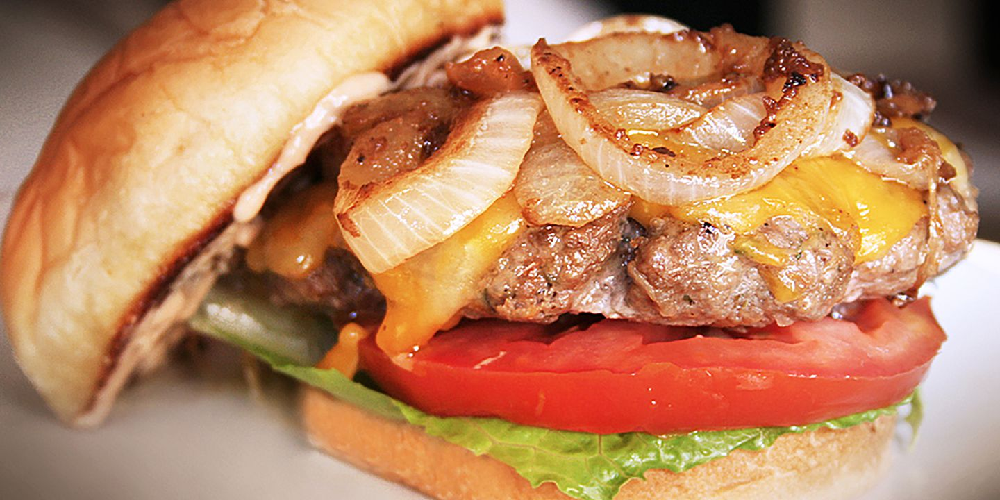

"The best burger recipe you'll make all summer! These juicy hamburgers are
bursting with flavor"
American cheese summer
Ingredients
- 1.5 pounds lean ground beef
- 0.5 onion, finely chopped
- 0.5 cup shredded Colby Jack or Cheddar cheese
- 1 egg
- 1 (1 ounce) envelope dry onion soup mix
Recipe instructions
- Preheat an outdoor grill for high heat and lightly oil the grate.
-
Meanwhile, combine ground beef, onion, cheese, egg, onion soup mix,
minced garlic, garlic powder, soy sauce, Worcestershire sauce, parsley,
basil, oregano, rosemary, salt, and pepper in a large bowl. Use your
hands to form the mixture into 4 patties.
-
Cook patties on the preheated grill until no longer pink in the center
and the juices run clear, about 4 to 5 minutes per side. An instant-read
thermometer inserted into the center should read at least 165 degrees F
(74 degrees C).
Return to top
Return to main page